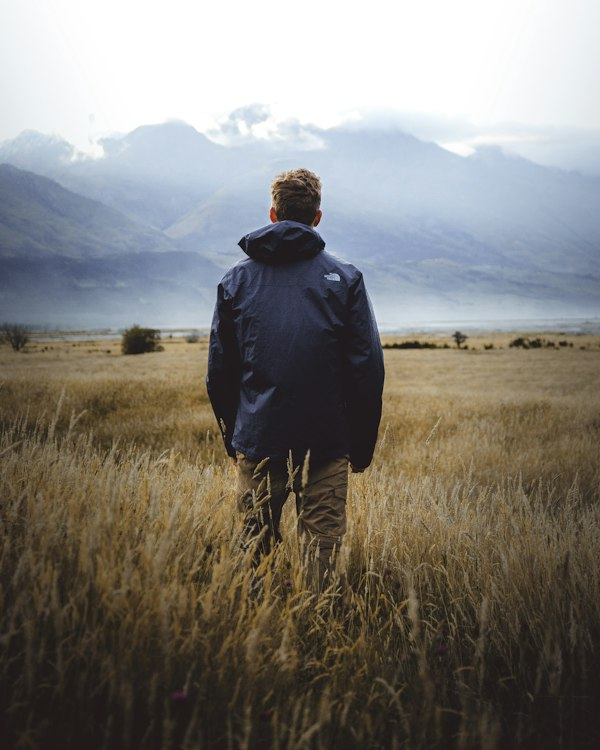
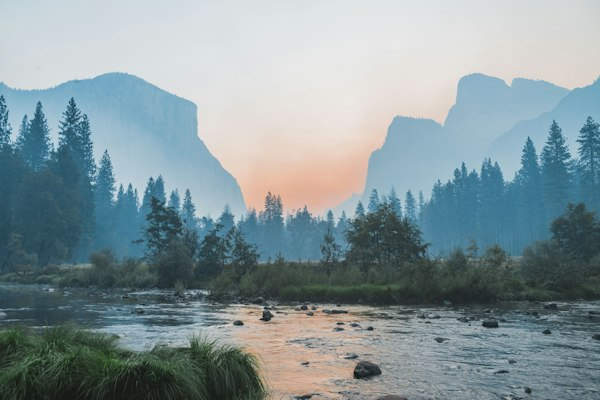
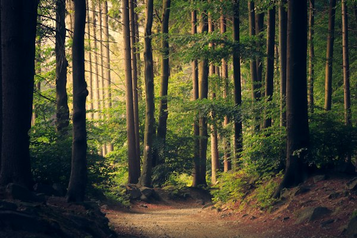
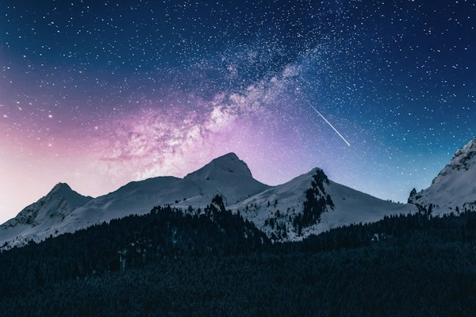

This gallery shares nine favorite travel moments from Vietnam and beyond, from Ha Long Bay and Sapa terraces to quiet lakes, forests, and city escapes.
I built this page as a responsive final project with mobile, tablet, and large screen layouts, plus support for reduced motion and dark mode preferences.






